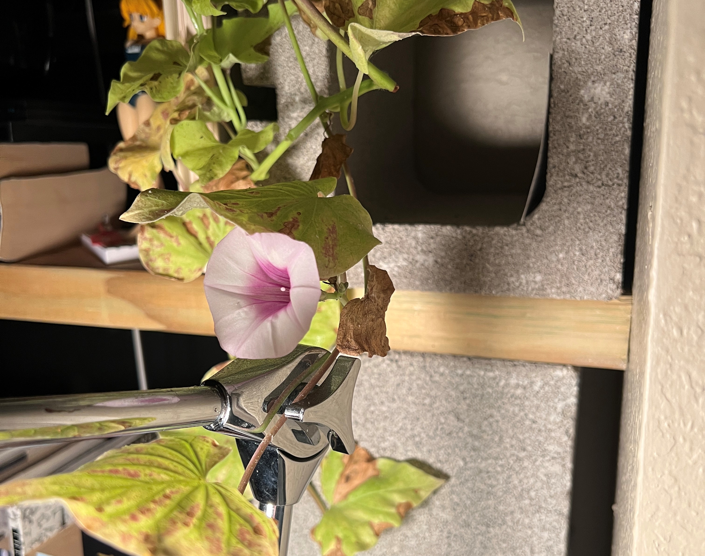
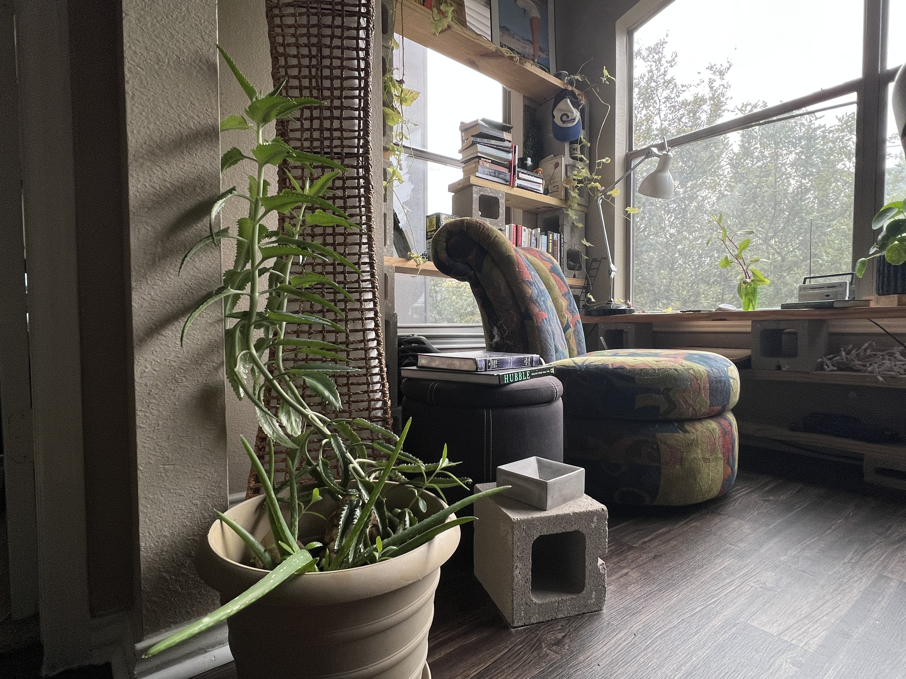
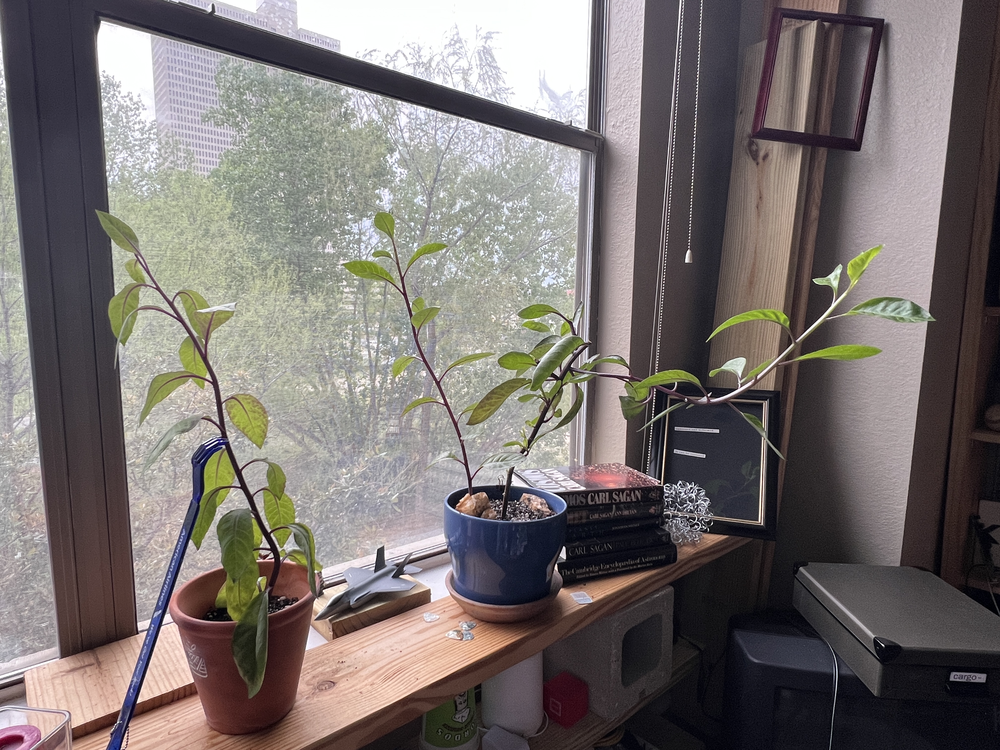
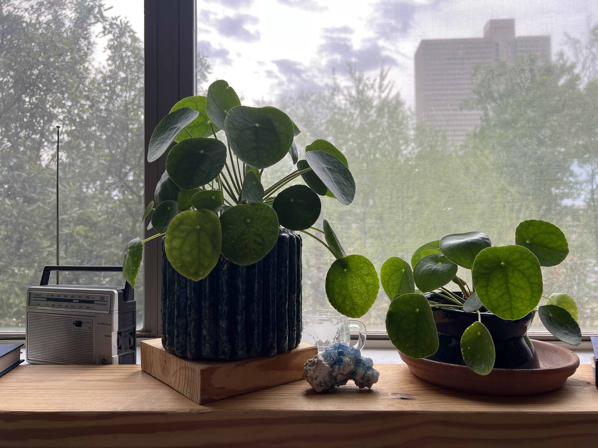

My flower
My vine grew a flower which I noticed yesterday; it is a pale pink on the open bell part and darker in the middle. I was very surprised to see it since it had never flowered before and it seems unhealthy. It constantly loses leaves and is covered in annoying little white insects that create sticky webs everywhere. Seeing the flower actually frightened me at first
I was planning to throw the plant away when I move in June, but now the thought hurts my heart a little (if it isn't shallow to suddenly begin to love the thing once it becomes beautiful). I have always pitied that plant; it has a sickly, nasal tone and a persistent masochistic attitude which has been fruitless for months. but the flower says that it has hope for its future. it apparently recognizes the spring and wants to participate in the summer. so I can't throw it away, though it would benefit from some trimming and a new pot. It neatly frames a shelf whose genres are approximately anthropology and philosophy.

Seeing how taken aback I was by the flower, I now feel obligated to introduce the other characters populating my windowsill, whom I'm sure will be the subjects of much subsequent gossip. Both the spinach plant and the succulent which shares a home with the aloe vera seem to me dumbly opportunistic, growing too tall to support themselves and then getting bent out of shape. They just keep growing blindly. the latter was found laying on the floor, green (proud) as ever, and probably would have died there if I didn't prop it up against the wall. The spinach sends off branches at steep angles and such a distance so as to bend the main stem over. I have to be better about proactively chopping it at a certain height to encourage some investment in the lower foundation.
For your information, the spinach plant does smell like spinach, yet I hesitate to eat it as that form of punishment seems barbaric.
The money plant is the coolest, smartest plant, always keeping to itself and maintaining composure. It never makes a mess or begs for water (as the spinach does with its intolerable infantile wilt (i might be spoiled by the hardiness of succulents)). It displays a unique leaf shape and measures its phototropism to ensure balance isn't lost. To be fair, many of the same things could be said about the aloe vera but its shape is unfortunately not very interesting. both make for hardy companions.
A few thoughts on plants
- just as the subtle patterns of plants are learned through daily watering, imperceptible moment-to-moment but drastic month-to-month, relationships with others develop with daily conversations.
- Plants slowly lean toward the window for sunlight, and people slowly gravitate toward likeable people. I watch as the freeloaders, assholes, and the generally annoying get excluded from one thing or another until their peers reach a state of optimally minimal interaction with them.
- The plant's immobility relieves it of fault; it is entirely subject to the consequences of its unchosen location. Animals enjoy mobility, and in exchange are bound to a high demand for external energy (the simultaneity of this dual paradigm is astonishing. or completely obvious and necessary). in gratitude for this ability, I feel that there could be an inherent
moral
imperative to change one's environment when it is bad. - a good song for thinking about plants: Peace for Earth, by Four Tet